https://theqoo.net/square/4346669777
예전에 한국 언론에도 소개됐던 일본인이 있음
자칭 Nature Sleep 수면 연구가
호리 다이스케 (1983년생)
2024년에 그의 기사는 우리나라 언론에
크게 보도되었는데, 매일 30분만 잔다는 사람으로
화제가 되고 있으며, 의사들은 이런 그의 주장이
근거 없고 위험하다고 하는 내용이었음
당시 보도에 따르면 호리 다이스케를
방송에서 3일 동안 따라다니면서 관찰했으나
26분만 자고도 활동했다고도 하고
본인이 만든 단시간 수면 훈련을
2100명 이상이 수료했다고도 함
'네이처 슬립 연구가' '쇼트 슬리퍼'로 활동해 왔지만
그가 처음부터 이렇게 짧게 자는 건 아니었음
호리 다이스케는 젊은 시절
하루 8시간 이상을 자는 '롱 슬리퍼'였음.
하지만 하루 일과에서 잠에 쓰는 시간이
너무 많아서, 시간이 항상 부족하다는 걸 깨닫고
25살부터 치열한 훈련에 돌입
2개월만에 하루 45분 이하 수면을 취하는
쇼트 슬리퍼가 되었음 (본인주장)
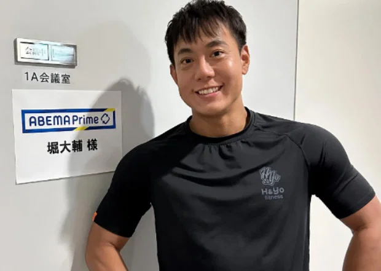
그리고 이 주장을 극단적으로
밀어붙이면서 일본에서 꽤 유명해짐
그의 사상과 훈련법의 정수인 '수면 혁명'이 나오고
이 책은 놀랍게도 우리나라에도 정발됨
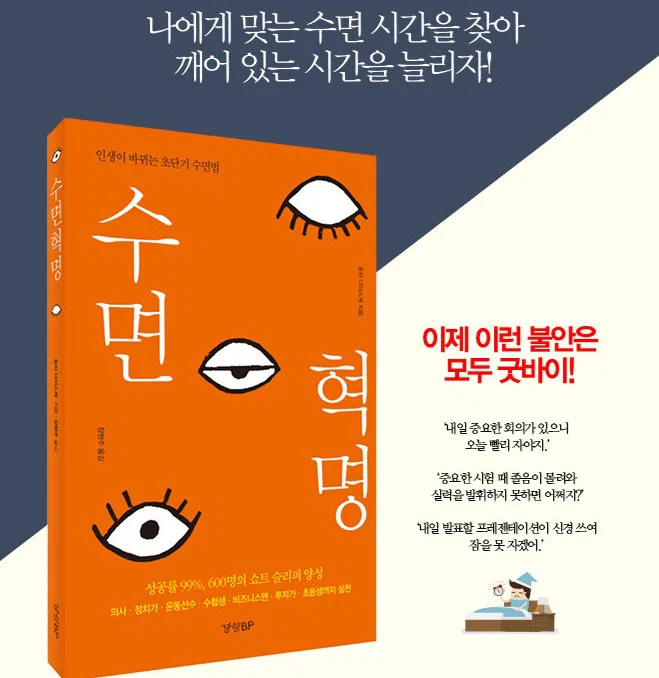
잠, 하루 1시간만 자도 된다!
수면에 대한 기존 상식을 뒤집는 11가지 진실
잠을 자지 않으면 오히려
능력과 동기부여가 UP!
성공률 99%, 600명의 쇼트 슬리퍼를 양성한 단수면 커리큘럼 공개!
의사.정치가.운동선수.수험생.비즈니스맨.투자가.초등생까지 실천!
누구나 7시간 수면을 해야 하는 것은 아니다.
나에게 맞는 수면 시간을 찾아 깨어 있는 시간을 늘리자!
‘내일 중요한 회의가 있으니 오늘 빨리 자야지.’
‘중요한 시험 때 졸음이 몰려와 실력을 발휘하지 못하면 어쩌지?’
‘내일 발표할 프레젠테이션이 신경 쓰여 잠을 못 자겠어.’
이제 이런 불안은 모두 굿바이!
(출판사 홍보자료)
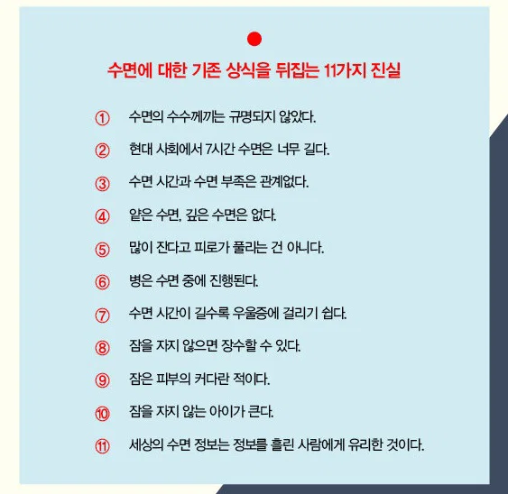
그의 말하는 것은, 수면은 결국 시간 낭비이며
쇼트 슬리퍼가 되면
수면을 컨트롤할 수 있게 되고
집중력과 기억력이 높아져
더욱 자신 있게 실력을 발휘할 수 있다는 것임
이 사람은 잠을 적게 자는 건 본인이 개발한 기술이며
훈련하면 다른 사람도 수면시간을
줄일 수 있다고 주장하면서
협회를 만들고 책을 팔고
유료 프로그램을 운영하였음
수면 비법을 전수받은 수강생은 2000명 이상
(본인주장)
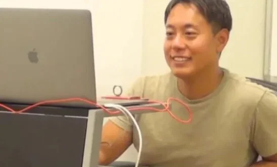
심지어 호리는 가족에게도 쇼트슬립 기술을
성공적으로 적용했다고 주장함
2024년 인터뷰에서는
아내의 수면시간을 하루 7시간 → 2시간으로
줄이도록 훈련시켰고
아들은 어릴 때 하루 3시간 정도 자다가
당시에는 4~5시간 정도 잔다고 설명함
과거 본인 협회 블로그에서도 생후 10개월 아들을
'쇼트슬리퍼 베이비'라고 소개하면서
생후 3개월경 4시간, 이후 약 3시간 잔다고 소개함
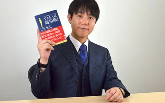
그런데 올해 들어 일본에서
'그래서 진짜로 하루 30분만 자는거 맞나?'
하는 의심이 엄청 커짐
그래서 본인이 아예
일주일 = 168시간 동안
자기 생활을 24시간 생중계로 보여주기로 함
그의 말대로라면 이건 그에게
전혀 난이도 높은 방송이 아닌데
17년동안 해 온 생활을 그대로 카메라 켜고
평소대로 살기만 하면 되는 셈임
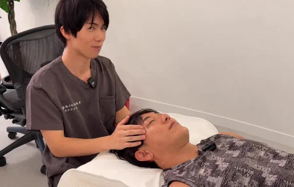
그런데 방송 2일째, 48시간도 안된 시점에서
헤드마사지를 받던 중 눈을 감고
코까지 골면서 27분 동안
잠들어 있는 장면이 그대로 방송됨
일어난 뒤에 호리는
'마이크로슬립이 10번 정도 들어갔다'고 말함
그리고 카메라를 보면서 채팅창의 시청자들을 향해
"이건 잠을 안 자는 챌린지가 아닙니다."
"마이크로슬립이 들어가는게 나쁘다고 생각하지 않아요"
라고 구차한 변명을 시도
당연히 엄청나게 욕먹고 이 때부터는
SNS와 언론의 집중적인 관심사가 됨
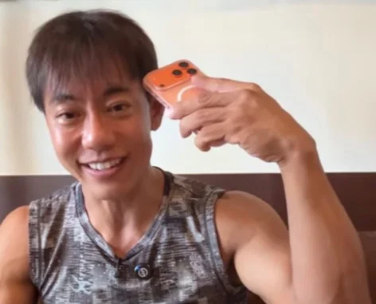
방송이 계속되고 더 이상 버티기 어려워지자
호리는 낮잠도 가능하다고 설명하면서
방송 중 짧은 낮잠을 도입하겠다고 함
그리고 카메라에 나타나지 않는 시간이 길어짐
그래서 어느 순간부터 논쟁이
'진짜 30분만 자냐'에서
'이 사람이 말하는 수면이라는 건 대체 어디까지인가?'
로 바뀌기 시작함
방송이 계속 화제가 되면서 한 때
동시 시청자수는 10만명 이상 붙음
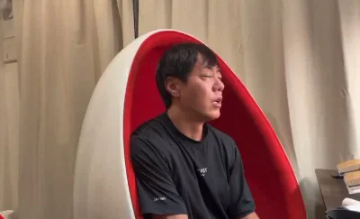
그리고 그의 컨디션은 갈수록 급격히 저하
호리가 잠깐 눈만 감아도
'잤다, 방금 잤지? 마이크로슬립!'
같은 댓글이 수없이 올라오는 상황이 되고
몰골은 갈수록 비참해져서
봐줄 수 없는 상태가 되어감
그러다 9월 15일 새벽
방송 시작 약 127시간째
호리가 목욕을 하면서 방송을 계속하다가
움직이는 과정에서 카메라에
성기가 그대로 드러나는 방송사고가 발생
이 사건 이후 일본 SNS와 채팅창은
완전히 다른 의미로 폭발함
오만가지 패러디, 농담이 난무하고 이 사건
자체가 일본 트위터의 엄청난 밈이 됨
이름만 쳐도 끝도 없는 저질 드립이
SNS에서 난무하고
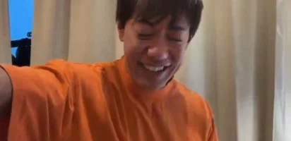
당사자가 이 사실을 확인
"제 신체 일부가 무검열로 인터넷에
돌아다니는거 알고 있습니다"
이 소리를 직접 해서 또 난리가 남
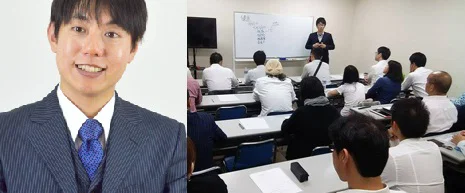
그런데 이런 우스꽝스런 방송사고와 별개로 이 사람이
해온 일을 보면 사실 안 웃긴 부분도 있음
이 사람은 괴상한 수면법을 밑도 끝도 없이
떠들고 다니는 인터넷 괴짜가 아님
검증되지 않은 극단적 수면법을 건강 정보처럼
책, 강의, 프로그램으로 팔고 다니는 사람임
잠을 자지 않는 아이가 큰다
초등학생도 실천했다
내 자식한테도 하고 있다 같은 소리를 하고
이걸로 방송도 꽤 타고, 유명해져서
유튜브 구독자도 20만이 넘는 상태임
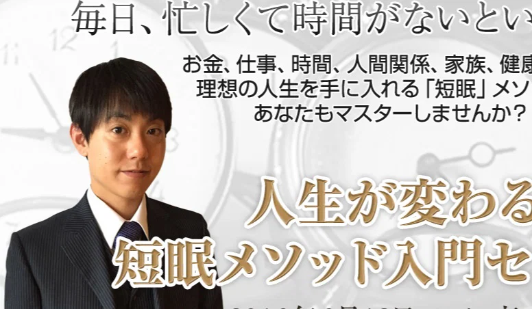
"집중력이 향상되고 수입도 늘고 휴가도 늘었습니다"
Y.K. / IT 엔지니어 / 남성 / 30대 초반
원래 하루 6시간이었던 수면시간이 지금은 2시간이 됐습니다.
그 결과 하루에 처리할 수 있는 업무량도 늘었고
매일 근력운동이나 조깅도 할 수 있게 됐습니다.
"아이의 떼쓰기도 받아줄 여유가 생겼습니다"
M.A. / 주부 겸 네일리스트 / 여성 / 20대 후반
시간적 여유가 생긴 덕분인지 어느 순간
아이가 떼를 써도 받아줄 수 있게 되었고
식사 준비와 청소도 할 수 있게 됐습니다.
남편과 이야기할 기회도 늘어
예전보다 훨씬 행복하다고 느끼는 일이 많아졌습니다.
하루 3시간 수면이 된다면
당신의 꿈과 목표는 얼마나 빨라질까요?
“너무 바빠서 시간이 부족하다!”
당신에게도
“일에서 성공하고 싶다”
“수입을 늘리고 싶다”
“스트레스 없는 생활을 하고 싶다”
같은 꿈과 목표가 있겠죠?
그런 당신에게 오늘 특별한 제안이 있습니다.
만약 시간이 더 생긴다면 어떨까요?
실은 하루의 시간을 늘리는 방법이 있습니다.
보다 정확히 말하면, 당신이 자유롭게
사용할 수 있는 시간을 늘릴 수 있는 것입니다.
그 방법은,
당신의 ‘수면시간’을
‘자유시간’으로 바꾸는 것!!
이와 같은 광고를 그는 계속 해 왔음.
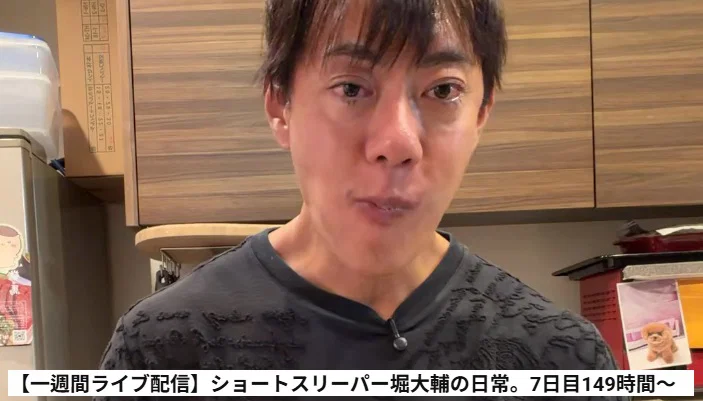
참고로 지금도 일주일 생방송 도전 하고 있고
유튜브에서만 만명 넘게 보고 있음
던파에 어둑섬 해방 나왔을때 솔클 도전하다가 24시간 정도 안자봤는데 진짜 뒤지겠든데